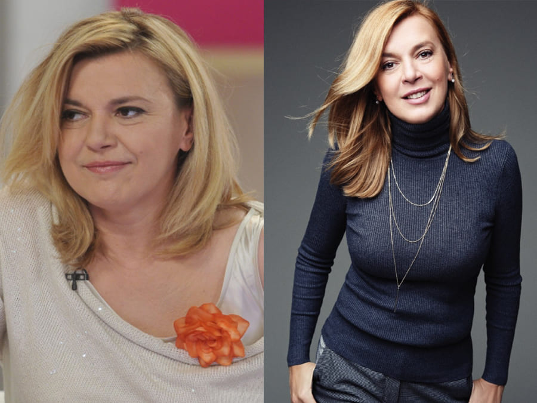

Hogyan lehet fogyni 17kg-mot? Egyszerű!
A fogyás titkai Borbács Marcsitől
Én magam is lefogytam, és segítek neked lefogyni.
Szia! Sajnálom, hogy nem válaszoltam az összes kérdésre, nem volt annyi időm rá. De észrevettem, hogy mindannyian ugyanaz a probléma körül forognak: hogyan lehet egyszer és mindenkorra lefogyni. És persze anélkül, hogy károsítaná az egészségedet! Ezért úgy döntöttem, hogy mindet egyesítem ebben a bejegyzésben, és elmondom nektek, hogyan vesztettem el a gyűlölt 17 kg-ot.
Ezek a képek pontosan egy hónappal később készültek. Lenyűgöző, nem igaz?
Sosem voltam sovány, de az utóbbi időben a testem elszabadult, és katasztrófává vált:
mellkasig érő dupla áll, hatalmas combok és cellulit mindenütt, a hasamon, a lábamon,
sőt még a karomon is. Amint észrevettem, az összes pólómat és ujjatlan ingemet széttéptem.
Úgy sírtam, mint egy szökőkút, mielőtt magamhoz tértem. Persze meggyógyultam, de még
mindig kövér voltam! Mindent egyszerre kezdtem el kipróbálni,
valószínűleg úgy, mint a többi buta lány. Diétázni kezdtem, és elkezdtem edzeni. Hajnalban
keltem, nyers tojást ettem (Azt ne csináld!), és kövér lábaimat
vonszolva keltem ki. Lemondtam a sült ételekről, beiratkoztam egy edzőterembe, vettem
fogyókúrás teákat, és megtöltöttem a hűtőt joghurttal. Gondolod, hogy segített?
Éppen ellenkezőleg! Nem tudom, hogyan, de a diéta és az edzés ezen hetei alatt újabb 5 kg-ot szedtem fel. 87 kg voltam! Az én 160 cm feletti magasságommal! Később az orvosok elmagyarázták nekem, hogy a szervezetem stresszhelyzetben volt, és a testem intenzíven elkezdte felhalmozni a "tartalékokat". A testem azt hitte, hogy el akarom pusztítani, és én ezt szerettem volna megtenni! Elfelejtettem a kenyér, a hús és a fagylalt ízét. Csak almát ettem és csak vizet ittam, de hiába.
Röviden, hónapokig próbálkoztam különböző fogyókúrás módszerekkel, de semmi sem vált be, és feladtam az őrületet.
Szégyellem kimondani, de egyszer már beletörődtem abba, hogy vénlány leszek. Hogy még jobban meghízzak, és hét macskával körülvéve haljak meg. Így hát elmentem a McDonald's-ba, megrendeltem a fél menüt, és fél óra alatt megettem az egészet. Aztán hánytam a fürdőszobában és sírtam. A helyzet ennél rosszabbul nem is alakulhatott volna.
Aztán egy csoda történt. Nem, nem a McDonald's vécéjében, hanem néhány héttel később. Láttam
egy videót a YouTube-on egy amerikai nőről, aki arról beszélt, hogyan szabadult meg az
elhízástól és a cellulittól a fenekén a segítségével.
Megrendeltem, és amikor már félúton volt hozzám, elkezdtem további információkat
keresni a Google-on, és rájöttem, hogy az összes hollywoodi sztár ezt használja a fogyáshoz.
Mivel mindent kipróbáltam, és nem kaptam eredményt, nem hittem a csodás átalakulásban, és
kételkedtem abban, hogy a segíthet rajtam. Hát, nem csak hittem benne!
A csomag kevesebb mint egy hét alatt megérkezett.
Amíg vártam, rengeteg véleményt és beszámolót olvastam, hogy megbizonyosodjak arról, hogy jól döntöttem. Követtem az utasításokat, és naponta kétszer, reggel és este vettem be a terméket.
Most jön megdöbbentő információ, jobb, ha leülsz.
4 hét alatt 13 kg-ot fogytam!
Európában és az USA-ban nők milliói szabadulnak meg a súlyfeleslegtől a segítségével. Tanulmányok szerint 96,7%-uk lenyűgöző eredményeket ért el: 9-14 kg-ot 4 HÉT alatt.
Az összetevők egyedülálló kombinációja, hogy a fogyás könnyű és hatékony legyen, és az eredmények lenyűgözőek!
A combomon 10 cm-t veszítettem, a hasam pedig egyszerűen eltűnt. Nem tudtam elhinni. A bőröm és a hajam sokkal ragyogóbb lett, a hátamon lévő pattanások is eltűntek. Kezdtem elhinni, hogy mégiscsak gyönyörű hercegnő lehetek. A mérleg és a tükör nem hazudik! És nem diétáztam, amikor ot szedtem, úgy ettem, ahogy szoktam.
Az ötödik hét is kifizetődött: -6kg.
És az volt a csodálatos, hogy nem kellett semmit sem tennem. Csak az utasítás szerint
vettem be a szert. Még a nagyon lusta emberek is elérhetik a fogyás eredményeit, ha nem
felejtik el rendszeresen szedni a -et.
Másfél hónap alatt, mindenféle erőfeszítés, nélkülözés vagy edzés nélkül, körülbelül 18 kg-ot fogytam. Így a hasam és a karjaim, amelyek tele voltak cellulittal, lefogytak, és a második állam örökre eltűnt. Majdnem sírok a boldogságtól, miközben ezeket a sorokat írom :)
A kurzus elvégzése után (két hónap) 23 kg-ot fogytam! Senki sem tudja elképzelni, hogy a test milyen csodákra képes, ha segítünk neki. Már nem vagyok a húszas éveimben, amikor könnyű volt segítség nélkül lefogyni.
Emberek ezrei még mindig nem tudják elhinni, hogy most hogy nézek ki:
A -et a Nemzeti Tudományos Akadémia 2021-ben tesztelte. Az eredmények sokkolóak lettek volna, de soha nem hozták nyilvánosságra őket.
Miért van ez így? Mert a gyógyszergyárak, magánklinikák, orvosok és táplálkozási szakemberek számára egy valóban működő termék nem kényelmes!
Most már ajánlom a -et minden barátomnak és kollégámnak, mindenkinek tudnia kell
erről a hihetetlen termékről. Olyan jó érzés karcsúnak és tele energiával lenni, szeretném,
ha
mindenki tudná, milyen boldog lehet.
Ha úgy dönt, hogy megrendeli, tegye ezt a termék hivatalos weboldalán.
Ne éheztesse magát, ne ölje meg magát az edzőteremben, legyen okos! Most már tudja, mit
kell tennie.
Ha még mindig karcsú testről álmod, itt az ideje cselekedni! Szabaduljon meg a zsírtól azonnal és könnyedén!
Most a legnépszerűbb kérdésekre fogok válaszolni:

Lesznek terhességi csíkok, miután ilyen gyorsan
veszítettem?
Nem, a nem hagy nyomokat a bőrön! A fogyás, bármilyen jelentős is, fokozatos,
így a bőrnek van ideje alkalmazkodni és tónusos maradni.
Mi történik a bőrrel? Zsugorodik?
Nem! Vissza fog térni a normális állapotba. A aktiválja a kollagéntermelést,
így a bőr feszes és rugalmas marad. Nem maradnak
striák, ráncok vagy narancsbőr!
Milyen étrendet kellene követnem?
Ellenzem a diétákat, a testünk nem kínzásra van kitalálva.
Igaz, hogy este 6 óra után nem szabad enni?
Nem, ez csak egy mítosz. Egyen, amikor csak szeretne, ne hallgasson ezekre a
pletykákra. De jobb, ha néhány óránként kis adagokat fogyaszt, és akkor minden rendben lesz.
legújabb hozzászólások:
szeretem . Válasz . 2
szeretem . Válasz . 12
szeretem . Válasz . 16
szeretem . Válasz . 11
szeretem . Válasz . 21
szeretem . Válasz . 9
szeretem . Válasz . 9
szeretem . Válasz . 32
Вау...
szeretem . Válasz . 17
szeretem . Válasz . 2
szeretem . Válasz . 32
szeretem . Válasz . 42
szeretem . Válasz . 1
szeretem . Válasz . 19
szeretem . Válasz . 5
szeretem . Válasz . 27
szeretem . Válasz . 8
szeretem . Válasz . 8
szeretem . Válasz . 8